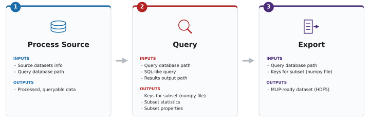

Command Line Interface (CLI)¶
After installing the chemreporter package, you will have access to a Command
Line Interface (CLI) that allows you to process, query, and export large-scale
chemical source datasets.
The CLI is driven by YAML configuration files, ensuring that the data pipelines are reproducible and easy to version control.
ChemReporter Workflow¶
The CLI exposes three main subcommands, corresponding to the three stages of the
chemreporter workflow:
process: Ingests large, raw chemical source datasets (e.g., extxyz, aselmdb), extracts core structural and quantum chemical properties, and stores the result in a Query Database of partitioned Apache Parquet files.query: Leverages Polars to run out-of-core, streaming DataFrame operations across the Query Database, lazily evaluating filters across millions of structures chunk-by-chunk with a minimal, constant memory footprint. This is how you carve out and iteratively refine your own custom data subsets.export: Streams the selected configurations and writes them in parallel across multiple worker threads into clean HDF5 files, fully prepared for downstream machine learning training. For the internal layout of the exported file, see the Export Schema.

Basic Usage¶
The chemreporter executable becomes available once you have installed the
package and activated the corresponding Python environment, see
Installation. All commands require a configuration file
passed via the -c or --config flag. You can also generate a template
configuration file by running:
chemreporter generate-config process > my_config.yaml
# You can also generate configs for 'query' and 'export'
1. Process¶
Converts raw source datasets into the standardized chemreporter Query Database
format. Currently, ChemReporter supports the following source dataset formats:
aselmdb(ASE DB)xyz(extended XYZ)
Each supported dataset is read by its own reader implementation selected via
database_format, and these implementations are not interchangeable — see
Crucial Implementation Details
for how they differ before processing a new dataset.
Important caveat: You can append rows to an existing Query Database (i.e., add a new source dataset), but not columns. This means that if a new property is implemented in ChemReporter, the entire source dataset must be reprocessed. For a huge source dataset like OMol25, this currently takes around 50 hours on modern CPU infrastructure.
chemreporter process -c /path/to/process.yaml
For more information on the config, see Configuration.
2. Query¶
Queries the Query Database to filter specific structures.
By default, this command will put a file named {timestamp}-filtered_keys.npy
into the results folder which contains all the query database keys of the
chemical systems in the subset. This is the crucial file required as input for
the export step.
Depending on additional actions requested in the config, there may be more files in the results folder with statistics, plots, or SMILES of the filtered subset. The config is also saved in the results folder for reproducibility.
chemreporter query -c /path/to/query.yaml
For more information on the config, see Configuration. To further select a subset of the filtered rows, e.g. randomly or via a custom diversity sampling strategy, see Sampling.
3. Export¶
Exports a filtered subset of the Query Database into an HDF5 file. For the internal layout of the exported file, see the Export Schema.
For Large Exports (over 1M entries) it is advised to use the multiprocessing
implementation. To do so, use the num_workers flag in the config (e.g.
num_workers: 8). You can also export additional fields by specifying them in
the config (e.g. extras_fields: ["smiles", "molecular_weight"]). These fields
will be stored in an extras group within each HDF5 entry.
For large exports, more memory and CPUs should be allocated on your computing infrastructure (e.g. 200-300 GB of memory, 16-32 CPUs).
chemreporter export -c /path/to/export.yaml
For more information on the config, see Configuration.
Custom I/O Plugins¶
By default, chemreporter assumes that all paths in your configuration are
local file paths. However, it can also handle cloud URIs out of the box (for
example s3://...), via cloudpathlib
in chemreporter.cli.io_utils. Standard AWS credentials or environment
variables are usually sufficient for this; the default init_cloud_client()
(introduced in more detail further below) is a no-op unless you replace it.
Check out the source of that module for the full details of what is covered
out of the box.
For any custom, user-defined remote storage handling, such as custom
authentication, another cloud provider, or entirely different I/O logic, you
can add a Python plugin via the --io-plugin flag. The CLI then builds a
ChemReporterIO handler from your plugin and passes it to process,
query, and export. The next sections explain how to write and use such a
plugin.
Writing an I/O Plugin¶
Create a standard Python file (e.g., my_custom_io.py) that overrides one or
more methods of the default ChemReporterIO handler (see
chemreporter.cli.io_utils). You only need to define the methods you want to
change; any method you don’t override keeps using the default implementation.
There are two ways to define your overrides in the plugin file. Pick one — they cannot be combined within the same file:
Dict of functions: define a module-level
CHEMREPORTER_IOdict that maps method names to your replacement functions, e.g.CHEMREPORTER_IO = {"download_file": my_fn}.Standalone functions: define top-level functions named exactly after the methods you want to override (e.g.
def download_file(...): ...). This style is only picked up if the file does not define aCHEMREPORTER_IOdict.
Overridable methods (see ChemReporterIO in chemreporter.cli.io_utils):
init_cloud_client()download_file(path, local_file_path)upload_file(local_file_path, dest_path)upload_folder(local_folder, dest_path)write_parquet(df, output_path)read_parquet(dir_path, schema=None)
Example: Dict-style plugin
# my_custom_io.py
import shutil
from pathlib import Path
from cloudpathlib import AnyPath
def my_custom_download(path: AnyPath, local_file_path: Path) -> None:
print(f"--- USING CUSTOM DOWNLOAD: {path} ---")
local_file_path.parent.mkdir(parents=True, exist_ok=True)
shutil.copy(str(path), local_file_path)
CHEMREPORTER_IO = {
"download_file": my_custom_download,
}
Example: Standalone-function plugin
import shutil
from pathlib import Path
def download_file(path, local_file_path):
print(f"Intercepted download request for: {path}")
shutil.copy(path, local_file_path)
def init_cloud_client():
print("Initializing custom secure cloud connection...")
Using the Plugin with the CLI¶
Pass the path to your Python file using the --io-plugin flag before the subcommand:
chemreporter --io-plugin my_custom_io.py process -c /path/to/process.yaml
At startup, the CLI loads your plugin file, builds a ChemReporterIO handler
from its overrides, and uses it for all I/O throughout the pipeline run.